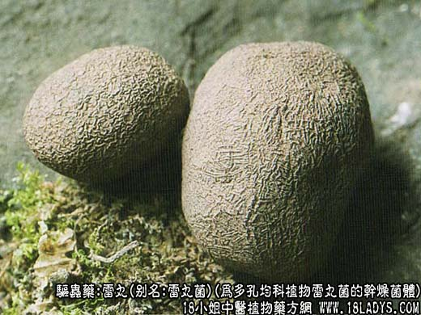
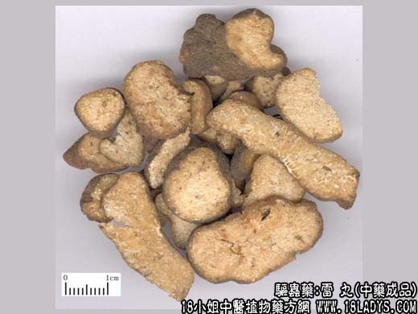
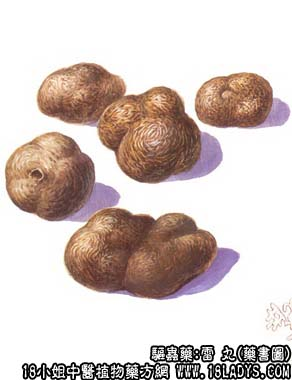

本品为少常用中药。始载《神农本草经》。
来源：为多孔均科植物雷丸菌的干燥菌体。野生，寄生于腐朽的竹根上。
产地：主产于四川、湖北、广西、云南、贵州等地。
性状鉴别：本品呈不规则的团块状，大小不等，直径1～5厘米。表面棕黑色或黑褐色，略显粗糙，有网状皱纹。质坚重，不易破碎。断面牙白色，角质，有半透明或不透明的层纹相交错，呈颗粒集结样花纹。气无，味淡。以大小均匀，坚实沉重，外皮黑褐色，内碴牙白色者为佳。
主要成分：含溶蛋白酶（约3%），为驱虫有效成分。
功效与作用：杀虫（主要为绦虫），口服后被绦虫体所吸收，通过溶蛋白酶作用，使虫体蛋白质分解破坏，虫头不再附于肠壁而排释。此外，体外试验又能灭猪蛔虫、蚯蚓和水蛭。
炮制：捣碎生用。
性味：苦、寒。
归经：入肠、胃经。
功能：杀虫。
主治：小儿疳积，虫疾腹痛等症。
临床应用：为驱绦虫常用药，对驱钩虫也有一定帮助。但对蛔虫、鞭虫疗效不高。
1、治绦虫，对猪肉绦虫和牛肉绦虫都有一定疗效。可用雷丸粉。
使用注意：1、本品有效成分遇热易破坏，故不入煎剂，用粉剂以冷开水调服。
2、副作用极少，偶有轻度恶心。
3、雷丸本身含大量镁，有通便作用，服后一般不要另用泻药。
用量：粉剂一日量30～60g，分2~3次。用糖水送服较好。
处方举例：雷丸粉：雷丸粉45～60g（一日量），加少许冷开水把粉末调成膏泥样或糜粥状态，分3次口服，连服2～3天。
注：1、本品含一种蛋白酶，能破坏绦虫及囊虫虫体，达到杀灭的作用。此外对钩虫、蛔虫也有杀灭作用，临床报导用于治疗脑囊虫病获得满意效果。
2、本品所含蛋白酶，溶于水，加热至60℃，半小时后或在酸溶媒中失效，在碱性溶媒中作用最强。宜为丸散服，不宜煎煮。日用量6～18g。